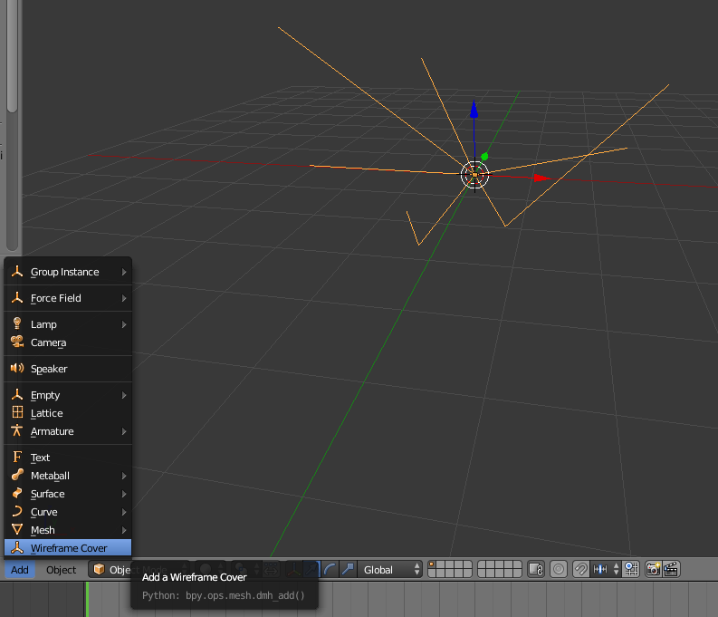

DMH User Manual¶
Adding Wireframe Cover¶
Select the wireframe that you want to cover in 3D View. Click on “Add” and choose “Wireframe Cover” as shown in the picture.
{kind=link}
Choose the featured options¶
Your first wireframe cover is shown in the 3D View. You can now choose between all the options shown in the picture. The changes will be shown in the 3D View.

Knot-Type¶
You can choose between three types of Knots as shown below:
- Cube
- UV-Sphere
- ICO-Sphere

See also
There is also the Option included to hide knots with two edges or to scale knots and edges.
Pro-Vertex-Radius (PVR)¶
Use the PVR option to manually scale knots or/and edges. Just set a bevel-weight for each vertex of the source wireframe. The bevel-weights will act as a scaling factor.
Setting bevel-weight:

The knots and/or edges will be scaled:
{kind=link}
Note
Bevel-weights are set to 0.0 if you dont change them. A bevel-weight of 0.0 will fully hide the knot.
Hide knots with two edges¶
To hide knots with only two edges choose this option. In the following picture you can see the effect.

Radius/Resolution¶
The resolution and the radius of the knots and edges are easy adjustable through the GUI options.
Smooth shading¶
For a nice smooth look of the Knots & Edges, please checkmark the Smooth-Shading button.
{kind=link}
Import and Export ‘.dmh’-files¶
You can import and export ‘.dmh’-files with this AddOn. Just use the file-menu:
{kind=link}
Note
Exporting a dmh-object will always use the actual data stored in the AddOn-options. Because of that, this AddOn will always export the last created dmh-object.
Just create a json-file and use the following file-structure in case you want to create your own ‘.dmh’-file without exporting a dmh-object:
{kind=link}